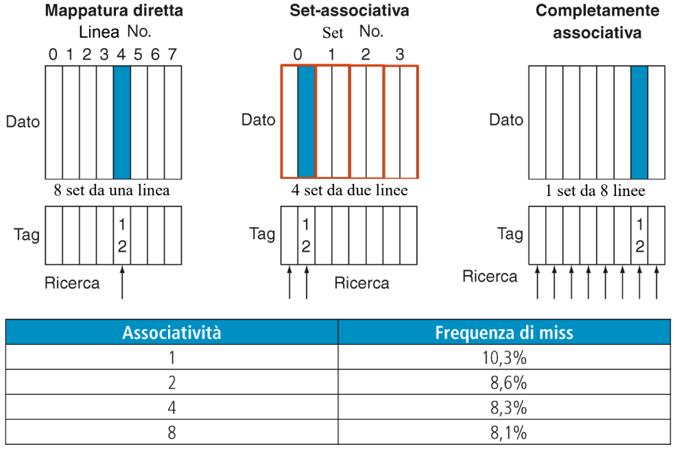
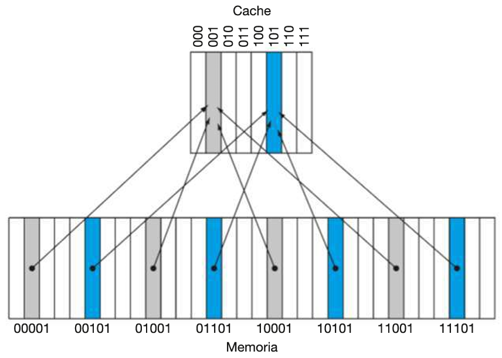
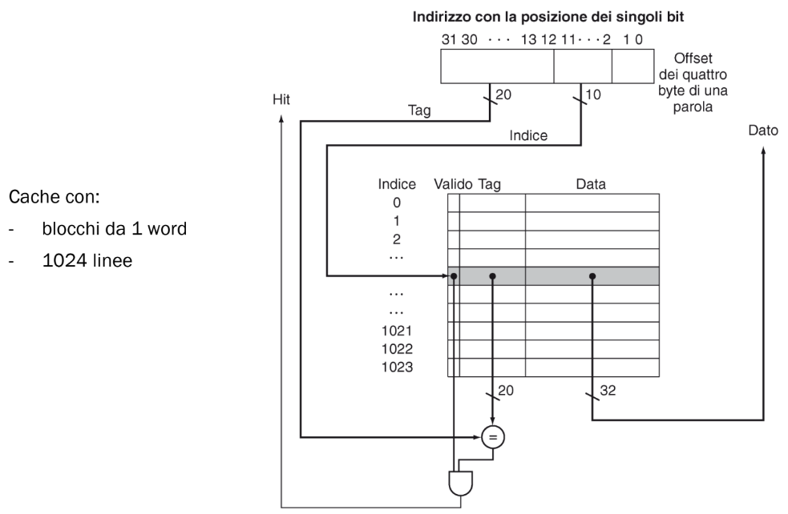
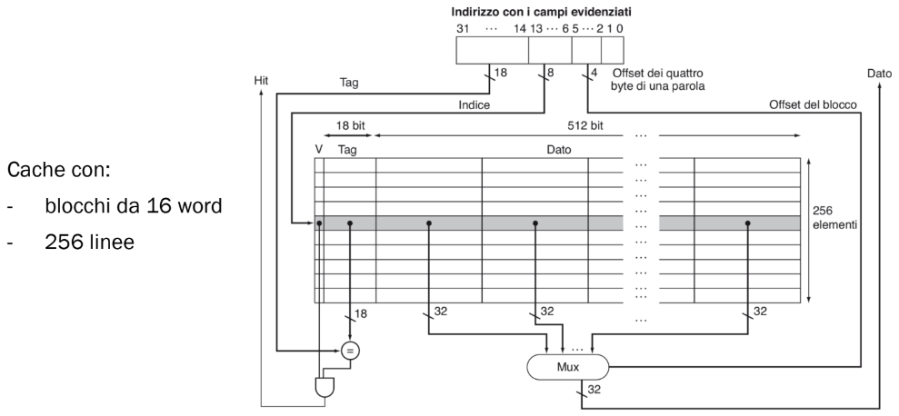
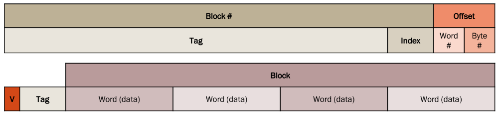
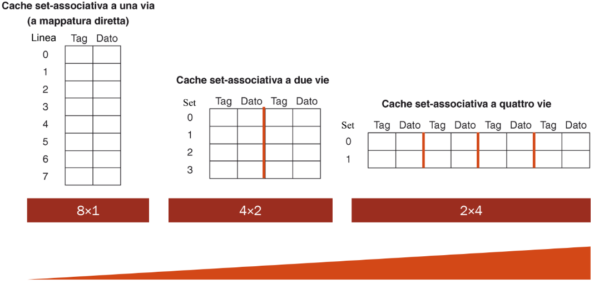
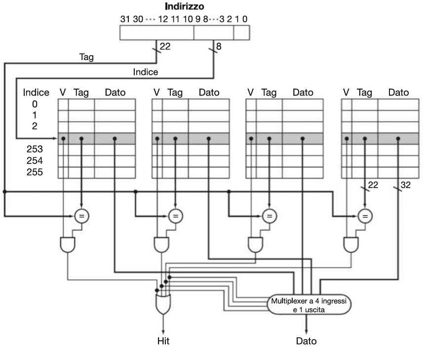

La memoria cache è una memoria molto veloce posta tra la CPU e la memoria principale (RAM), progettata per accelerare l’accesso ai dati usati più frequentemente. Funziona come buffer intermedio: copia localmente porzioni di memoria RAM in modo da evitare accessi lenti alla memoria principale ogni volta che la CPU ha bisogno di leggere o scrivere dati.
FUNZIONE
La CPU moderna è molto più veloce della RAM. Accedere continuamente alla RAM rallenterebbe l’esecuzione. Infatti la cache sfrutta località spaziale e località temporale per massimizzare la probabilità di hit.
Esempio:
Supponiamo che un programma preveda 1 000 000 di accessi in memoria e che il tempo di accesso sia di 100 ns:
Il tempo che il programma impiegherà per l’accesso è 1 000 000 × 100 ns = 100 ms MA se si usa una cache con tempo di accesso 1 ns e la percentuale di miss è il 10%:
- il 90% di 1 000 000 accessi (HIT) impiegheranno 1 ns × 1 000 000 × 90% = 0.9 ms
- il 10% rimanente (MISS) impiegheranno 100 ns × 1 000 000 × 10% = 10 ms
In totale il tempo di accesso medio sarà 10ms + 0.9ms / 1 000 000 = 10.9 ns con un aumento di velocità di 100ns / 10.9ns ≅ 9 volte circa
CARATTERISTICHE PRINCIPALI
| Caratteristica | Descrizione |
|---|---|
| Volatile | I dati si perdono allo spegnimento |
| Molto veloce | Accesso in pochi nanosecondi (1–30 ns) |
| Limitata capacità | Tipicamente da qualche KB (L1) a qualche MB (L3) |
| Costosa | Costo per bit molto più alto rispetto alla RAM |
| Tecnologia | Basata su SRAM |
STRUTTURA MULTILIVELLO
Le moderne CPU utilizzano più livelli di cache (con caratteristiche diverse), per diminuire il più possibile gli accessi in memoria RAM che sono molto più lenti (ordine di decine o centinaia di cicli di clock):
| Livello | Posizione | Velocità | Dimensione | Tipica associatività | Condivisione |
|---|---|---|---|---|---|
| L1 | Interna al core | Molto alta | 32–64 KB | Alta (es. 4–8 way) | Privata per core |
| L2 | Interna o vicina | Alta | 256–512 KB | Media | Privata o condivisa |
| L3 | Su chip, lontana | Media | 4–32 MB | Bassa (es. 8–16 way) | Condivisa tra core |
| RAM | Esterna al chip | Molto bassa | GB | — | Condivisa |
ASSOCIATIVITÀ
L’associatività definisce quante linee di cache possono contenere un blocco proveniente dallo stesso indirizzo (cioè dallo stesso index logico). Maggiore è l’associatività, più “posti” possibili ci sono in cache per un certo blocco di memoria → meno conflitti, più flessibilità, ma anche più complessità hardware.
TIPI DI CACHE (per associatività)
| Tipo | Associatività | Descrizione breve |
|---|---|---|
| Direct-mapped | 1-way | Ogni blocco può andare in 1 sola riga → semplice, veloce, ma può causare molti conflitti |
| Set-associative | k-way | Ogni blocco può andare in 1 di k righe (in un set, insieme di righe) → buon compromesso tra velocità e flessibilità |
| Fully-associative | ∞ (massima) | Ogni blocco può andare in qualunque riga (nessuno index) → massima flessibilità, ma richiede confronto con tutti i tag (elevato costo hardware) |
 |
Nella cache a mappatura diretta il blocco 12 può essere scritto in una sola linea di cache e il numero di questo blocco si ottiene dall’operazione
12 % 8 = 4(indirizzo % numero di linee di cache). La cache set-associativa a due vie è costituita da 4 set (di linee) e il blocco 12 della memoria dovrà trovarsi nell’ insieme12 % 4 = 0(indirizzo % numero di set di cache). Nella cache completamente associativa il blocco 12 può trovarsi in ognuna delle 8 linee della cache
CACHE A MAPPATURA DIRETTA
Cache in cui a ogni locazione della memoria principale corrisponde una (e una sola) locazione della cache. Per la mappatura dei dati si utilizza un criterio molto semplice di uguaglianza tra l’indice della cache e i bit meno significativi dell’indirizzo in memoria:

In questo caso i log₂(8) = 3 bit meno significativi dell’indirizzo dei blocchi in memoria principale vengono utilizzati come indici della cache (3 bit = numeri da 0 a 7). Perciò indirizzi come 00001, 01001, 10001 e 11001 sono mappati tutti allo stesso indice di cache, ovvero 001 (3 bit meno significativi di ogni indirizzo).
CAMPI DI UNA LINEA DI CACHE
Per rendere possibile la ricerca di word all’interno della cache è necessario aggiungere alcuni campi fondamentali:
Bit di validità:
Campo di un bit che se non asserito (impostato a 0) indica che il blocco di cache a cui è associato non è valido (di solito vuoto) e che quindi la lettura della riga non può avere successo a priori:
Se V = 0, la CPU non confronta nemmeno il tag → è miss immediato
Se V = 1, allora si controlla il campo tag per decidere se è un hit o un miss
Campo tag:
Contiene i bit che non sono stati utilizzati come indice della cache. Tag + indice = indirizzo del blocco in memoria.
Nell’esempio sopra appartengono al campo tag i due bit più significativi degli indirizzi (00, 01, 10, 11)
Campo dato (blocco):
Contiene l’intero indirizzo preso dal blocco in memoria principale
ESEMPIO DI RICERCA NELLA CACHE (BLOCCHI DA 1 BYTE)
Immaginiamo una sequenza di 9 richieste di dati a una memoria cache di 8 linee:
| Indirizzo decimale del dato nella memoria principale | Indirizzo binario del dato nella memoria principale | Hit o miss nell’accesso alla cache |
|---|---|---|
| 22 | 10110 | Miss |
| 26 | 11010 | Miss |
| 22 | 10110 | Hit |
| 26 | 11010 | Hit |
| 16 | 10000 | Miss |
| 3 | 00011 | Miss |
| 16 | 10000 | Hit |
| 18 | 10010 | Miss |
| 16 | 10000 | Hit |
Accensione del calcolatore:
| Indice | V | Tag | Dato |
|---|---|---|---|
| 000 | 0 | ||
| 001 | 0 | ||
| 010 | 0 | ||
| 011 | 0 | ||
| 100 | 0 | ||
| 101 | 0 | ||
| 110 | 0 | ||
| 111 | 0 | ||
| Inizialmente la cache è vuota: | |||
tutti e 8 i blocchi sono vuoti e i bit di validità V sono tutti a 0. |
Prima richiesta:
| Indice | V | Tag | Dato |
|---|---|---|---|
| 000 | 0 | ||
| 001 | 0 | ||
| 010 | 0 | ||
| 011 | 0 | ||
| 100 | 0 | ||
| 101 | 0 | ||
| 110 | 1 | 10 | 10110 |
| 111 | 0 | ||
La prima richiesta: 10110 (indice di cache 110) → miss (V = 0, blocco vuoto) | |||
Viene scritto l’indirizzo 10110 all’indice di cache corrispondente. |
Seconda richiesta:
| Indice | V | Tag | Dato |
|---|---|---|---|
| 000 | 0 | ||
| 001 | 0 | ||
| 010 | 1 | 11 | 11010 |
| 011 | 0 | ||
| 100 | 0 | ||
| 101 | 0 | ||
| 110 | 1 | 10 | 10110 |
| 111 | 0 | ||
La seconda richiesta: 11010 (indice di cache 010) → miss (V = 0, blocco vuoto) | |||
Viene scritto l’indirizzo 11010 all’indice di cache corrispondente. |
Terza richiesta:
| Indice | V | Tag | Dato |
|---|---|---|---|
| 000 | 0 | ||
| 001 | 0 | ||
| 010 | 1 | 11 | 11010 |
| 011 | 0 | ||
| 100 | 0 | ||
| 101 | 0 | ||
| 110 | 1 | 10 | 10110 |
| 111 | 0 | ||
La terza richiesta: 10110 (indice di cache 110) → hit (V = 1, blocco non vuoto) |
Quarta richiesta:
| Indice | V | Tag | Dato |
|---|---|---|---|
| 000 | 0 | ||
| 001 | 0 | ||
| 010 | 1 | 11 | 11010 |
| 011 | 0 | ||
| 100 | 0 | ||
| 101 | 0 | ||
| 110 | 1 | 10 | 10110 |
| 111 | 0 | ||
La quarta richiesta: 11010 (indice di cache 010) → hit (V = 1, blocco non vuoto) |
Quinta richiesta:
| Indice | V | Tag | Dato |
|---|---|---|---|
| 000 | 1 | 10 | 10000 |
| 001 | 0 | ||
| 010 | 1 | 11 | 11010 |
| 011 | 0 | ||
| 100 | 0 | ||
| 101 | 0 | ||
| 110 | 1 | 10 | 10110 |
| 111 | 0 | ||
La quinta richiesta: 10000 (indice di cache 000) → miss (V = 0, blocco vuoto) | |||
Viene scritto l’indirizzo 10000 all’indice di cache corrispondente. |
Sesta richiesta:
| Indice | V | Tag | Dato |
|---|---|---|---|
| 000 | 1 | 10 | 10000 |
| 001 | 0 | ||
| 010 | 1 | 11 | 11010 |
| 011 | 1 | 00 | 00011 |
| 100 | 0 | ||
| 101 | 0 | ||
| 110 | 1 | 10 | 10110 |
| 111 | 0 | ||
La sesta richiesta: 00011 (indice di cache 011) → miss (V = 0, blocco vuoto) | |||
Viene scritto l’indirizzo 00011 all’indice di cache corrispondente. |
Settima richiesta:
| Indice | V | Tag | Dato |
|---|---|---|---|
| 000 | 1 | 10 | 10000 |
| 001 | 0 | ||
| 010 | 1 | 11 | 11010 |
| 011 | 1 | 00 | 00011 |
| 100 | 0 | ||
| 101 | 0 | ||
| 110 | 1 | 10 | 10110 |
| 111 | 0 | ||
La settima richiesta: 10000 (indice di cache 000) → hit (V = 1, blocco non vuoto) |
Ottava richiesta:
| Indice | V | Tag | Dato |
|---|---|---|---|
| 000 | 1 | 10 | 10000 |
| 001 | 0 | ||
| 010 | 1 | 11 | 10010 |
| 011 | 1 | 00 | 00011 |
| 100 | 0 | ||
| 101 | 0 | ||
| 110 | 1 | 10 | 10110 |
| 111 | 0 | ||
L’ottava richiesta: 10010 (indice di cache 010) → collision → miss (V = 1, blocco non vuoto) | |||
Viene sovrascritto l’indirizzo 10010 all’indirizzo 11010, all’indice di cache corrispondente (mappatura diretta → sovrascrittura immediata delle collisioni). |
Nona richiesta:
| Indice | V | Tag | Dato |
|---|---|---|---|
| 000 | 1 | 10 | 10000 |
| 001 | 0 | ||
| 010 | 1 | 11 | 10010 |
| 011 | 1 | 00 | 00011 |
| 100 | 0 | ||
| 101 | 0 | ||
| 110 | 1 | 10 | 10110 |
| 111 | 0 | ||
La nona richiesta: 10000 (indice di cache 000) → hit (V = 1, blocco non vuoto) |
SCOMPOSIZIONE LOGICA DELL’INDIRIZZO IN MEMORIA
Quando avviene una miss sulla cache e si deve recuperare il dato in memoria principale (RAM), il controller della cache (componente hardware del processore), al fine di inserire l’indirizzo in memoria nella linea corretta, opera su di questo (indirizzo) una scomposizione logica (con criterio posizionale dei bit):
Se la cache è composta da blocchi di grandezza = 1 byte:
Il controller della cache divide l’indirizzo semplicemente in:
| Tag | Indice |
|---|---|
| ([[Cache#campi-di-una-linea-di-cache | I campi della linea di cache]]) |
Se la cache è composta da blocchi di grandezza > 1 byte e ⇐ 1 word:
Il controller della cache divide l’indirizzo in:
| Tag | Indice | Offset byte |
|---|
Offset byte:
Serve a indicare in quale byte del campo dato (del blocco di cache) inserire l’indirizzo (se si tratta di un blocco lungo 1 word i byte saranno quindi 4 e la lunghezza dell’offset byte sarà di 2 bit, 22 = 4).
Esempio:

In questo caso l’indirizzo in memoria è stato diviso in: 20 bit di tag, 10 bit di indice e 2 bit di offset di byte
Se la cache è composta da blocchi di grandezza > 1 word (più word):
Il controller della cache divide l’indirizzo in:
| Tag | Indice | Offset byte | Offset word |
|---|
Offset word:
Serve a indicare in quale delle word del campo dato (del blocco di cache) inserire l’indirizzo (se si tratta di un blocco lungo 16 word la lunghezza dell’offset byte sarà di 4 bit, 24 = 16).
Quindi in questo caso la posizione nel campo dato dell’indirizzo preso è data da due offset: prima si sceglie quale word e poi quale byte della word scelta.
Esempio:

In questo caso l’indirizzo in memoria (lungo 1 word) è stato diviso in: 18 bit di tag, 8 bit di indice, 4 bit di offset di word e 2 bit di offset di byte
DIMENSIONI DELLE PARTI DELL’INDIRIZZO

La prima riga (sopra) é la struttura logica di un indirizzo di memoria (32 bit in architettura standard), che viene suddiviso per essere interpretato dalla cache:
| Campo | Dimensione | Descrizione |
|---|---|---|
| Offset byte | 2 bit | (per scegliere 1 dei 4 byte in una word) |
| Offset parola | m bit | (per scegliere 1 delle 2ᵐ word di un blocco) |
| Index | n bit | (per scegliere 1 delle 2ⁿ linee della cache) |
| Tag | (32 − n − m − 2) bit | Il resto dell’indirizzo, identifica il blocco |
| Questa parte non è memorizzata nella cache, ma è usata per decidere: dove andare a cercare (index), se c’è un match (tag), quale dato leggere (offset). |
La seconda riga (sotto) è la struttura di una riga (linea) della cache vera e propria, ovvero cosa viene memorizzato in ogni entry della cache:
| Componente | Dimensione | Descrizione |
|---|---|---|
| Valid bit (V) | 1 bit | indica se la riga contiene dati validi |
| Tag | (32 − n − m − 2) bit | confrontato con il tag dell’indirizzo |
| Blocco (Block) | dipende dalla cache | contiene le parole |
| Questa parte rappresenta quello che fisicamente sta nella cache. |
DIMENSIONI DELLA CACHE
Bit totali occupati dalla cache (architettura a 32 bit):
Dove:
2ⁿ= numero di righe[blocco + tag + v]bit= dimensione in bit di una riga2ᵐ= numero di word per blocco(2ᵐ × 32)= bit dei dati del blocco (ogni word è 32 bit)32 − n − m − 2= bit del campo tag[blocco + tag + v] bit= dimensione in bit di una riga+1= valid bit
CACHE SET-ASSOCIATIVE
Una cache set-associativa k-way è una cache divisa in set, ognuno contenente k righe (o “way”). Quando un blocco di memoria deve essere caricato in cache, può andare in una qualsiasi delle k righe del set a cui appartiene (in base all’indice).
Esempio:

------------------------------⇒ associatività crescente -------------------------------⇒ Nella cache a una via (mappatura diretta), ci sono 8 linee (che equivalgono a 8 set con 1 way ciascuno):
8 × 1blocchi. Nella cache set-associativa a due vie, ci sono 4 set e ogni set ha 2 way:4 × 2blocchi. Nella cache set-associativa a quattro vie, ci sono 2 set e ogni set ha 4 way:2 × 4blocchi. Una cache set-associativa a 8 vie e 8 linee sarebbe completamente associativa
Ogni set è composto da vie tutte dello stesso indice (indice = numero di blocchi % numero di set), questo diminuisce considerevolmente i conflitti.
ARCHITETTURA HARDWARE
In una cache set-associative devo inserire un comparatore per ogni set, così che in ognuno di questi insiemi venga fatta la ricerca in parallelo (tutti i comparatori lavorano allo stesso tempo) del blocco richiesto (una cache completamente associativa ha un comparatore per ogni linea, per questo risulta complessa a livello di hardware). In ogni set quindi il comparatore cerca l’indirizzo tra le k ways dell’insieme.

DIMENSIONI DELLE PARTI DELL’INDIRIZZO
La prima riga (sopra) é la struttura logica di un indirizzo di memoria (32 bit in architettura standard), che viene suddiviso per essere interpretato dalla cache:
| Campo | Numero di bit | Ruolo |
|---|---|---|
| Offset byte | 2 | seleziona il byte nella word |
| Offset word | log₂(N) | seleziona la word (tra leN) del blocco |
| Index (set) | log₂(S) | seleziona il set in cache |
| Tag | 32 − log₂(S) − log₂(N) − 2 | identifica il blocco per il confronto |
| Questa parte non è memorizzata nella cache, ma è usata per decidere: dove andare a cercare (index), se c’è un match (tag), quale dato leggere (offset). |
La seconda riga (sotto) è la struttura di una riga (linea) della cache vera e propria, ovvero cosa viene memorizzato in ogni entry della cache:
| Componente | Dimensione | Descrizione |
|---|---|---|
| Valid bit (V) | 1 bit | indica se la riga contiene dati validi |
| Tag | (32 − n − m − 2) bit | confrontato con il tag dell’indirizzo |
| Blocco (Block) | dipende dalla cache | contiene le parole |
| Questa parte rappresenta quello che fisicamente sta nella cache. |
DIMENSIONI DELLA CACHE
Bit totali occupati dalla cache (architettura a 32 bit):
Dove:
k= ways (linee per set)S= numero di setk × S= numero totale di lineeTag=32 − log₂(S) − log₂(N) − 2N= numero di word in ogni blocco1= bit di validità
SCRITTURA DELLA CACHE
Una memoria cache può anche essere direttamente scritta (ad esempio da un’istruzione di store sw). Quando una scrittura viene effettuata su un dato in cache, occorre però propagare l’aggiornamento alla memoria principale (RAM) in modo da non creare incongruenze tra le due memorie. Le due principali strategie sono:
WRITE-THROUGH
Definizione:
Ogni scrittura in cache viene immediatamente riflessa anche in memoria.
La cache e la RAM restano sempre coerenti.
Funzionamento:
Quando si aggiorna un dato in cache, lo stesso dato viene subito scritto anche nella RAM. Non servono informazioni aggiuntive nei blocchi cache.
Vantaggi:
- Semplicità: la memoria principale è sempre coerente con la cache.
- Affidabile in sistemi multicore e multiprocessore (la RAM è sempre aggiornata).
Svantaggi:
- Molti accessi alla RAM: ogni scrittura genera un accesso lento alla memoria → si spreca la località temporale delle scritture (blocchi riscritti più volte).
- Peggiora le prestazioni in caso di molte scritture ravvicinate.
Implementazioni:
Al fine di diminuire gli accessi in memoria e velocizzare le scritture si può aggiungere un write buffer: una memoria temporanea tra la cache e la RAM, dove vengono accodate le scritture che devono essere propagate alla memoria principale. Il write buffer propaga le scritture in background, appena possibile, senza dover ricorrere a stalli della CPU. Tuttavia quando è pieno la CPU è costretta a fermarsi finché non si libera spazio, per evitare perdita di dati.
WRITE-BACK
Definizione:
La scrittura aggiorna solo la cache, e la RAM viene aggiornata solo quando il blocco viene rimpiazzato.
Funzionamento:
Ogni blocco ha un bit “Dirty” (sporco):
Dirty = 0: il blocco in cache è identico a quello in memoria.Dirty = 1: il blocco in cache è stato modificato.
Se un blocco Dirty = 1 viene rimpiazzato, il suo contenuto viene scritto in memoria.
Vantaggi:
- Prestazioni superiori: riduce il numero di scritture in RAM (sfrutta la località temporale).
- Più veloce per operazioni che modificano ripetutamente gli stessi dati.
Svantaggi:
- Coerenza più complessa: RAM e cache possono essere in disaccordo (problema in sistemi multiprocessore).
- Richiede hardware più complesso (bit Dirty, logica di scrittura condizionale).